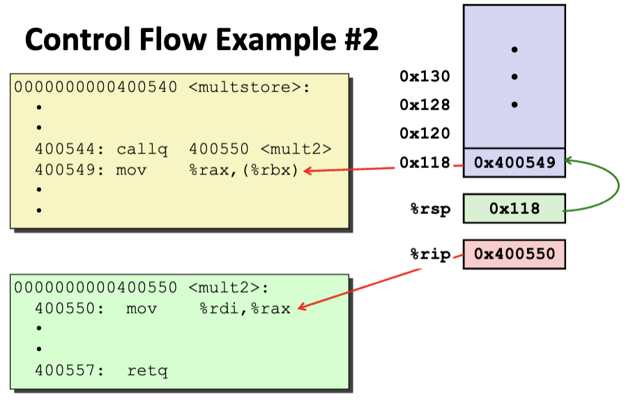
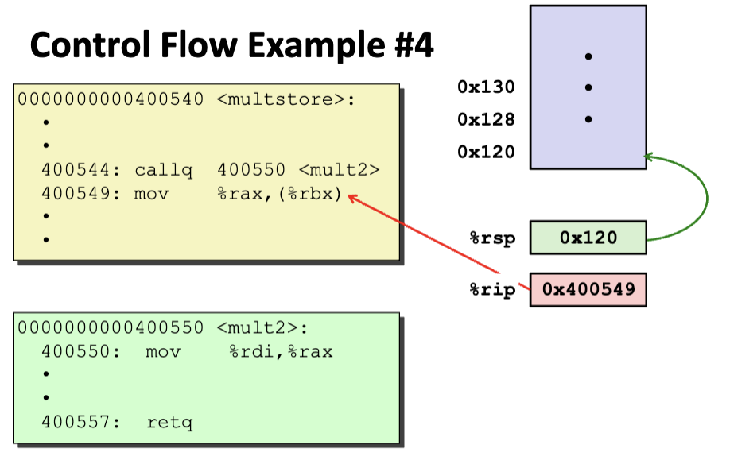
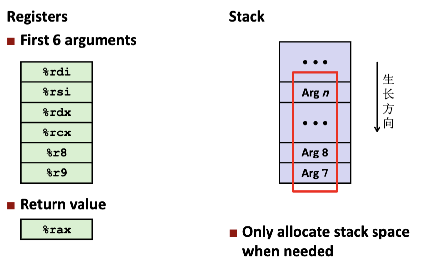
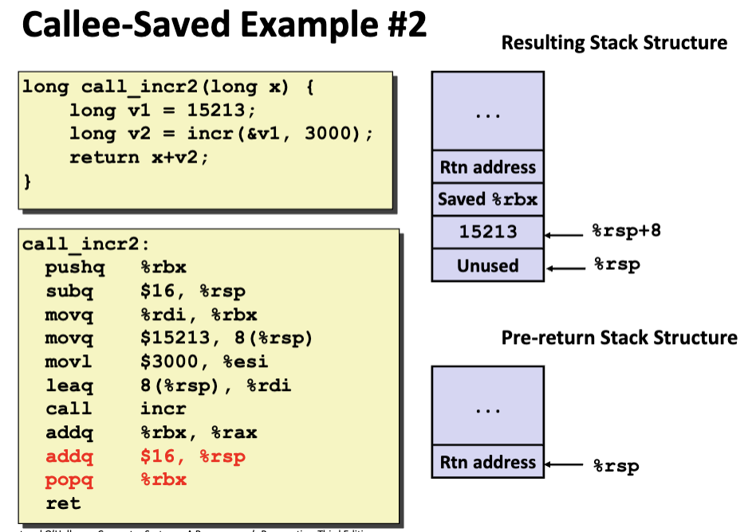
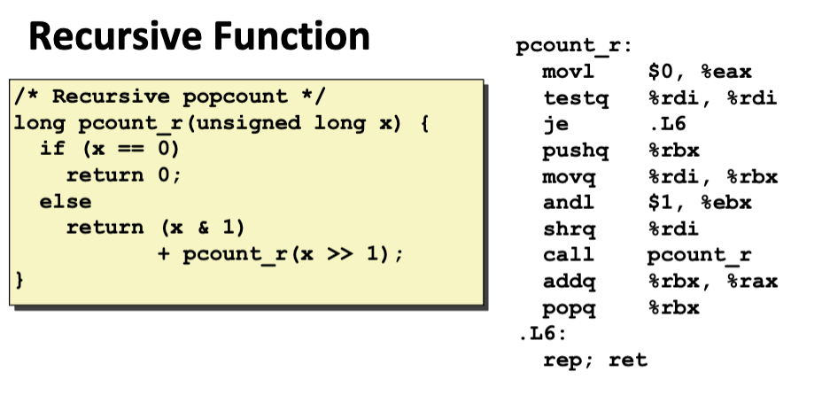
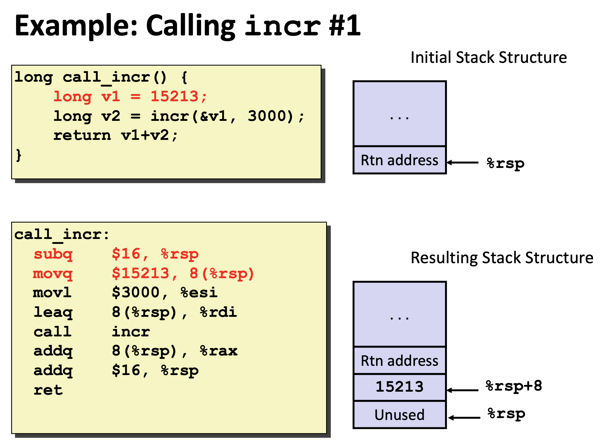

CSAPP 07-machine-procedures
进程机制
- Passing control传递控制，记录函数返回地址，跳转到函数开始地址；
- Passing data传递参数；
- Memory management内存管理；
运行时的栈和栈帧
- 习惯性将栈顶画在底部，从下到上地址增大，栈向低地址生长，即向下生长；
pushq Src，会使得%rsp减小；popq Dest，会使得%rsp增加；- 不会改变具体栈上的内容，只会改变指针的位置；
callq label：- push return address to stack；
- jump to label；
- 即将栈向下生长一格，将函数返回地址放入，
%rsp存的是指向该返回地址的指针；然后%rip变为函数的开始地址；
ret：- pop address from stack；
- jump to address(即将PC
%rip设置为该地址)； - 此时过程内的一切东西都会被释放（除了动态申请的内存）；
- label是不占位置的；


- Stack
Frames栈帧：即过程活动记录，每次调用函数分配的一段独立的栈帧，
ret时释放栈帧； - 一个常见的调用过程的栈内容如下：（向下生长，往下为低地址）
| Arg n |
| \(\cdots\) |
| Arg 7 |
| Return Addr(Caller's %rip)以上部分均为Caller的栈帧 |
| optional Callee's %rbp |
| Saved Registers + Local Varibles |
| Arg Build(optional)，如果该函数内部还要调用其他函数，需要传递的参数在这里进行准备；以上部分为Callee的栈帧 |
数据传送与局部存储
- 以下讨论均为整形，浮点数有另一套东西；
- 当传递参数超过6个时，x86-64要求超过寄存器限制的参数按照从右到左的顺序压入栈（后面的参数先进入栈）：

- 由于寄存器在所有进程之间进行共享，所以规定Callee被调用者不会覆盖Caller调用者会使用到的寄存器的值：
- Caller
Saved调用者保存：调用者（Caller）负责保存在函数调用前需要保留的寄存器值，如果调用者需要在函数调用后继续使用某些寄存器中的值，那么它必须在调用函数之前将这些值保存到栈中或其他地方，并在函数返回后再恢复；
- 通过上述操作，Callee可以在调用过程中使用和改变这些寄存器的值；
- 典型的有：
%r10，%r11，%rax，%rdi，%rsi，%rdx，%rcx，%r8，%r9，即参数基本器和返回寄存器，调用者需要对自己负责，调用子函数时肯定需要确保这些值不能被被调用者改变；
- Callee
Saved被调用者保存：被调用者（Callee）负责保存在函数调用中需要保护的寄存器值，通常通过压栈来进行（就是上面画的Callee的栈帧中Saved
Registers的部分）；
- 典型的有：
%rbx，%rbp，%r12，%r13，%r14，%r15，比较特殊的是%rsp，因为调用子函数时，栈指针会往下移至子函数栈帧的栈顶，当子函数结束时，显然需要子函数来恢复栈顶指针指向调用者栈帧的栈顶；
- 典型的有：
- Caller
Saved调用者保存：调用者（Caller）负责保存在函数调用前需要保留的寄存器值，如果调用者需要在函数调用后继续使用某些寄存器中的值，那么它必须在调用函数之前将这些值保存到栈中或其他地方，并在函数返回后再恢复；
- 一个Callee Saved的例子

- 首先，
%rdi作用Caller Saved，需要由该函数保存，由于%rbx为Callee Saved，即被调用者保存，其值在该函数运行过程中不会发生改变，所以将%rdi保存在%rbx中，通过寄存器实现了保存； - 上述操作导致了一个问题，
%rbx作为Callee Saved，而该函数作为其上一层（主函数）的被调用者，该函数作为被调用者需要保存%rbx，所以，该函数一开头将%rbx压入栈，再最后又弹回给%rbx，通过在栈上存储，实现了保存；
- 首先，
- 再看一个递归的例子

- 在该函数中递归调用时，作为主调函数，需要保存
%rdi，与上面的例子类似保存在%rbx中； - 由于
%rbx是Callee Saved，pcouter_r作为主函数和上一层pcounter_r的被调用者，所以也需要保存%rbx；
- 在该函数中递归调用时，作为主调函数，需要保存
一个函数调用的例子

1. 栈操作不是运用传统的push和pop操作，直接移动指针，两者含义是否相同？
* 功能上相同：两种方式都用于管理栈上的数据；
* 实现上不同：直接调整
%rsp更高效，尤其在需要分配大块连续内存时；而
push/pop更适合操作单个寄存器或简单的栈保存和恢复；2. 为何多申请了一个8字节空间？
* System V ABI 规范了函数调用时的堆栈布局，以确保各函数之间的参数传递和返回地址的存储符合标准。堆栈以 16 字节对齐的方式操作，从而在调用指令（如
CALL和RET）时避免对齐问题；3. 何时申请栈中局部空间，何时不需要申请？
1. 需要申请局部空间的情况：
1. 局部变量无法存放在寄存器中：如果局部变量的数量超过了可用的寄存器，或者局部变量较大（如数组、结构体），必须在栈中分配空间。
2. 指针操作需要实际内存地址：如代码中的 &v1 需要将变量地址传递给函数，此时必须为变量分配实际的内存空间。
3. 函数递归或多层嵌套调用：每次调用会分配独立的栈帧用于保存局部变量和状态。
2. 不需要申请局部空间的情况：
1. 变量可以完全存储在寄存器中：编译器优化时，会尽可能将局部变量映射到寄存器中，避免占用栈空间。
2. 无需持久化变量状态：如果局部变量只在寄存器中临时使用且不需要在函数调用间共享，则不需要分配栈空间。
本博客所有文章除特别声明外，均采用 CC BY-NC-SA 4.0 许可协议。转载请注明来源 YokumiのBlog！